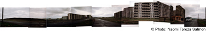

Non-Silk Way - Asian Extreme. International Moving Workshop for Contemporary Art, 2002.
Country of origin: Kazakhstan
Location: Almaty and other locations in Kazakhstan
Organized by: AsiaArt+ Public Foundation
Coordinator: Julia Sorokina
This project is a reflection on the complicated situation in Kazakhstan and entire Central Asia. Art is used as way to show this reality. Concept of the project is to organize a tour for artists and art experts from different countries in the world through Kazakhstani land, visiting cities and cultural centers such as Tamgalii, Dgambul, Karatau, Janatas, Kentau, Baba-Ata, Turkestan, Chimkent, Kazkurt, Aksu. It was named "Non-Silk Way" as it is the way, which connects monuments of history and culture and "monuments" of post-soviet epoch - destroyed cities and zones of ecological collapse. All these places constitute a common past, common present and way to the future. Participants of the project have an opportunity to reflect the reality of their way in temporary pieces created during this voyage. Exhibitions, round tables and discussions are organized at every point of the route. The events are then documented on a special website including an online discussion list and a booklet catalogue is to be published.

OQ Y'OL is the traditional call, and means "White way" in Uzbek language, with which one farewells the caravans leaving each station along the Silk Way in Central Asia, whishing them good luck. Together with that call, a bucket full with clear water is poured at the feet of the journey-takers. This act promises a good journey and a safe return.
When we left a Place, I took care to fill the blue Bucket with water and call the group for the Oq Y'ol ceremony. There was not one day, where we didn't need good luck. The Non-Silk way-Group though, understood the calling and water pouring as a shamanistic act. Since it always rained exactly on the days we were moving from place to place, the wishes for a pleasant journey were mistaken for a rain dance, and I was accused of being responsible for the wet and bad weather.
In any case, nothing really bad has happened to us.
Naomi Tereza Salmon - "Non Silk Way - Dogs Of Almaty" Audio Sequence, .mp3 format

Close Window
All content copyright 2006 Naomi Tereza Salmon - all rights reserved